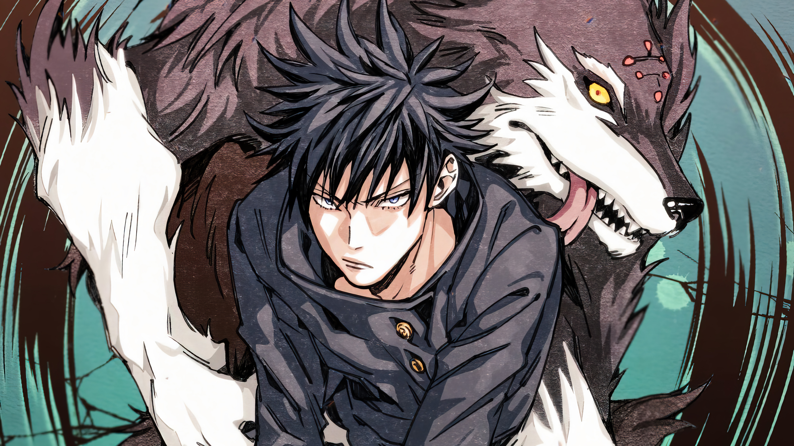
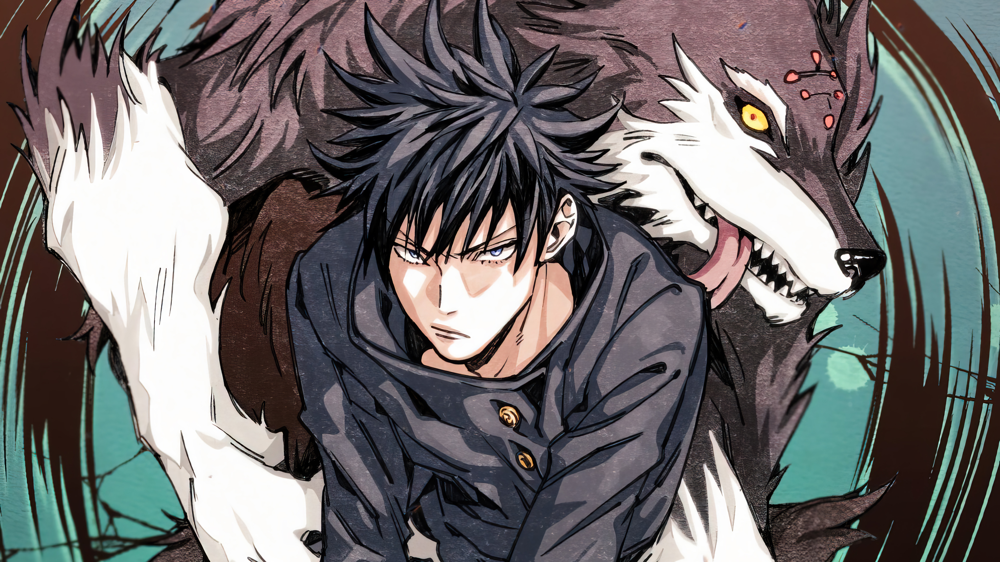
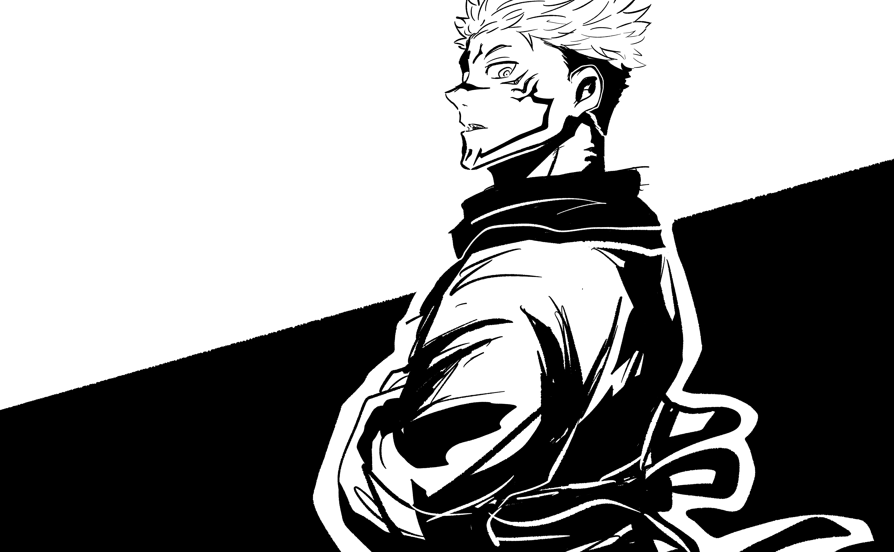
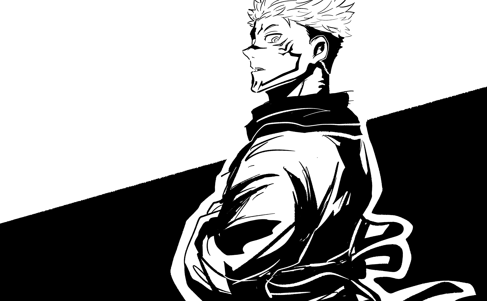

 

Nobara Kugisaki
Nobara Kugisaki é uma das personagens femininas principais no início de Jujutsu Kaisen,
sendo uma das calouras que ingressam na Escola Técnica de Jujutsu de Tóquio ao lado de Yuji Itadori
e Megumi Fushiguro. Aluna de Satoru Gojo, Nobara mostrou todo o seu potencial para exorcizar maldições logo em
seu primeiro dia,
provando que é mais uma aluna poderosa sobre a tutela do sensei. Nobara é de altura média com uma figura fina. Ela tem cabelo laranja de comprimento médio que chega ao pescoço que é estilizado com franja que cobre o lado direito da testa. Nobara tem olhos alaranjados, cílios longos e sobrancelhas finas da mesma cor.
Megumi Fushiguro
Megumi Fushiguro (伏黒恵 Fushiguro Megumi) é o deuteragonista da série Jujutsu Kaisen. Ele é um feiticeiro jujutsu de nível 2 e estudante do primeiro ano na Escola de Jujutsu de Tóquio junto com Yuji Itadori e Nobara Kugisaki. Megumi é o meio-irmão de Tsumiki Fushiguro e como o filho de Toji Fushiguro, Megumi também é um descendente do Clã Zenin. Megumi nasceu fora do clã e foi encontrado eventualmente por Satoru Gojo, que o ensinou na Escola de Jujutsu como seu aluno. Megumi é um jovem magro e relativamente alto de pele clara e olhos verdes. Ele possui cabelo preto com longos espinhos que sobressaem de todas as direções em volta da cabeça, lembrando um ouriço-do-mar (de acordo com Hakari).
Yuji Itadori
Yuji é uma pessoa justa que se preocupa muito não apenas com seus amigos, mas com qualquer pessoa que ele veja
como pessoas com suas próprias vontades, apesar de quão profunda ou superficial seja sua conexão com eles. Ele
se preocupa muito com o "valor de uma vida" e, para esse fim, garantirá que os outros recebam uma "morte
justa".
Uma das características definidoras de Yuji é sua disposição de se sacrificar pelos outros, desencadeada pelas
últimas palavras de seu avô para morrer cercado por outros. Quando ele e Megumi estavam sob a ameaça de serem
mortos por uma maldição, Yuji impulsivamente engoliu o dedo de Sukuna a fim de exorcizar a maldição e
salvá-los, apesar de encontrar Megumi pela primeira vez.
Ryomen Sukuna
Ryomen Sukuna (両りょう面めん宿すく儺な, Ryomen Sukuna) é um dos principais antagonistas de Jujutsu Kaisen. Atualmente ele é conhecido como o Rei das Maldições. Sua aparência anterior é descrita como um demônio com quatro braços e duas faces. Atualmente, ele parece semelhante ao hospedeiro em que está, mas com cabelo espetado e com marcas exclusivas na testa, nariz, bochechas e torso. Ele também tem um segundo par de olhos sob os olhos normais, que geralmente estão fechados. Sukuna também tem duas linhas em ambos os pulsos, braços, círculos em ambos os ombros com um ponto em cada, duas linhas curvas segmentadas em seu peito e duas linhas em seu estômago enquanto possui Yuji.